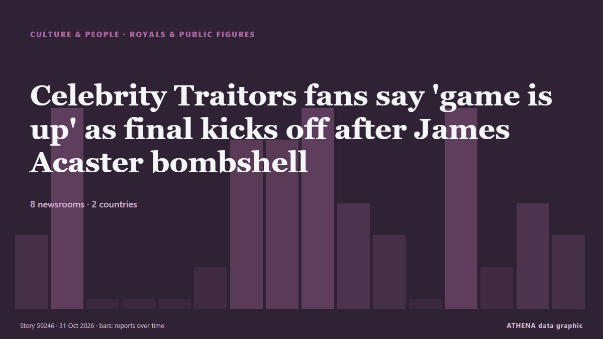

Celebrity Traitors fans say 'game is up' as final kicks off after James Acaster bombshell

The comedian announced at the roundtable that he was a traitor. de Manchester Evening News
Relayé de façon indépendante par 8 médias dans 2 pays depuis le 29 oct. ; premier à l'annoncer : Liverpool Echo ; la couverture est à son pic. Sport et culture sont classés sans évaluation du risque. La confiance est de 79 % (élevée) : 8 médias indépendants le confirment, avec une fiabilité moyenne des sources de 69 %. Médias par pays : Royaume-Uni (38), Irlande (2). Couverture : du 29 oct. au 30 oct., 28 heures.
Ce qui a changé : 34 nouveaux articles de 8 rédactions dans les 24 heures jusqu'au 31 oct..
Premier titre : Celebrity Traitors chaos as filming halted after James Acaster bombshell and crews rush onto set
Les titres sont affichés en anglais, tels que publiés.
En un coup d'œil
Sélectionné, noté et rédigé par la méthodologie publiée d'ATHENA. Aucun rédacteur n'intervient sur un événement en particulier. Comment il est produit ›
| 29 Oct 19:00 UTC | 2 |
|---|---|
| 29 Oct 21:00 UTC | 6 |
| 29 Oct 23:00 UTC | 0 |
| 30 Oct 01:00 UTC | 0 |
| 30 Oct 03:00 UTC | 0 |
| 30 Oct 05:00 UTC | 1 |
| 30 Oct 07:00 UTC | 5 |
| 30 Oct 09:00 UTC | 5 |
| 30 Oct 11:00 UTC | 6 |
| 30 Oct 13:00 UTC | 3 |
| 30 Oct 15:00 UTC | 2 |
| 30 Oct 17:00 UTC | 0 |
| 30 Oct 19:00 UTC | 6 |
| 30 Oct 21:00 UTC | 1 |
| 30 Oct 23:00 UTC | 3 |
| 31 Oct 01:00 UTC | 2 |
Pourquoi ces chiffres
Importance
Risque
Confiance
La couverture : qui l'a annoncé, et quand
titre tel que publié · ouvre l'original- Liverpool Echo · Royaume-UniCelebrity Traitors star Maya Jama's life off-screen, famous ex and Cheshire home
- Manchester Evening News · Royaume-UniCelebrity Traitors fans can't believe 'obvious' flaw ahead of final
- Manchester Evening News · Royaume-UniCelebrity Traitors fans question show's treatment of star after latest twist
- Manchester Evening News · Royaume-UniCelebrity Traitors James Acaster banishes himself after shock admission
- Liverpool Echo · Royaume-UniCelebrity Traitors 'ruined' by James Acaster as fans baffled at show first
- WalesOnline · Royaume-UniBBC Celebrity Traitors James Acaster just blew the game apart and fans are angry
- Belfast Telegraph · Royaume-UniJames Acaster: Plan to reveal identity ‘got me through’ Celebrity Traitors
- Evening Standard (London) · Royaume-UniJames Acaster: Plan to reveal identity ‘got me through’ Celebrity Traitors
- Manchester Evening News · Royaume-UniCelebrity Traitors chaos as filming halted after James Acaster bombshell and crews rush onto set
- Manchester Evening News · Royaume-UniPOLL: Has James Acaster ruined Celebrity Traitors final after outing himself?
- WalesOnline · Royaume-UniCelebrity Traitors filming 'halted' as crew rush onto set after James Acaster bombshell
- Manchester Evening News · Royaume-UniJames Acaster speaks out after Celebrity Traitors chaos that saw filming halted and scenes edited out
- Irish Mirror · IrlandeCelebrity Traitors chaos as filming 'halted' amid James Acaster bombshell
- WalesOnline · Royaume-UniCelebrity Traitors star James Acaster breaks silence on history making moment
- Evening Standard (London) · Royaume-UniCelebrity Traitors: How James Acaster’s explosive admission may mean the Faithful win against the odds
- Liverpool Echo · Royaume-UniJames Acaster breaks silence on Celebrity Traitors BBC filming halt and edited scenes
- WalesOnline · Royaume-UniWhy did James Acaster leave Celebrity Traitors? Real reason for surprise admission
- WalesOnline · Royaume-UniDevastating behind the scenes of Celebrity Traitors as filming halted
- WalesOnline · Royaume-Uni'James Acaster has ruined the Celebrity Traitors with the worst possible move'
- Evening Standard (London) · Royaume-UniWelfare of Celebrity Traitors players is ‘highest priority’ after Acaster exit
- Belfast Telegraph · Royaume-UniWelfare of Celebrity Traitors players is ‘highest priority’ after Acaster exit
- Manchester Evening News · Royaume-UniBBC issues Celebrity Traitors statement after James Acaster announcement sees filming suddenly halted
- Manchester Evening News · Royaume-UniCelebrity Traitors fans spot moment filming halted after James Acaster bombshell in 'ballistic' edit
- WalesOnline · Royaume-UniCelebrity Traitors winner 'exposed' hours before final after James Acaster exit
- Irish Mirror · IrlandeBBC releases 'welfare' statement after filming paused during James Acaster exit
- The Irish News (Belfast) · Royaume-UniCelebrity Traitors semi-final attracts highest peak audience of series
- Liverpool Echo · Royaume-UniBBC issues statement after Celebrity Traitors filming halted for James Acaster
- WalesOnline · Royaume-UniBBC issues statement after James Acaster's Celebrity Traitors bombshell
- Liverpool Echo · Royaume-UniJames Acaster speaks out ahead of Celebrity Traitors final as he was 'glad' to leave
- Evening Standard (London) · Royaume-UniBBC addresses James Acaster 'welfare' after shocking Celebrity Traitors confession
- Manchester Evening News · Royaume-UniCelebrity Traitors fans say 'game is up' as final kicks off after James Acaster bombshell
- WalesOnline · Royaume-UniCelebrity Traitors replacement confirmed by BBC as new series takes over
- The Scotsman · Royaume-UniCelebrity Traitors 2026 final RECAP: Here's how all of the action unfolded at the end of series 2
- The Irish News (Belfast) · Royaume-UniOne more contestant murdered as Celebrity Traitors final begins
- Liverpool Echo · Royaume-UniCelebrity Traitors fans say the same thing about Maya Jama's outfit during the final
- Manchester Evening News · Royaume-UniCelebrity Traitors stars speak out for first time since James Acaster confession
- Manchester Evening News · Royaume-UniCelebrity Traitors stars break silence over win as three missing from reunion
- Evening Standard (London) · Royaume-UniMaya Jama expected fellow traitor King Kenny to betray her on Celebrity Traitors
- Belfast Telegraph · Royaume-UniMaya Jama expected fellow traitor King Kenny to betray her on Celebrity Traitors
- WalesOnline · Royaume-UniCelebrity Traitors 'ruined' as frustrated fans make same plea for next series